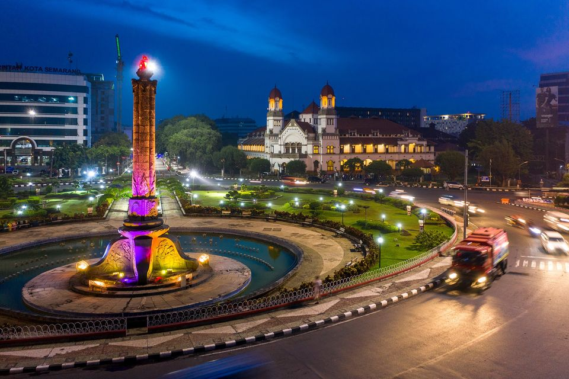

Kota Semarang
Jawa Tengah
Kota Semarang adalah ibu kota dan kota terbesar di provinsi Jawa Tengah, Indonesia. Kota ini merupakan pelabuhan utama pada masa penjajahan Belanda, dan masih menjadi pusat regional dan pelabuhan penting hingga saat ini. Kota ini dinobatkan sebagai destinasi wisata terbersih di Asia Tenggara oleh Standar Kota Wisata Bersih ASEAN (ACTCS) untuk periode 2020–2022.
Secara etimologis, nama "Semarang" berasal dari kata "asem", yang berarti "asam/pohon asam", dan kata "arang", yang berarti "jarang", yang digabungkan menjadi "asam yang jarang-jarang". Penamaan "Semarang" ini bermula ketika Ki Ageng Pandanaran I datang ke sebuah pulau bernama Pulau Tirang (dekat pelabuhan Bergota) dan melihat pohon asam yang jarang-jarang tumbuh berdekatan. Penamaan Kota Semarang ini sempat berubah saat zaman kolonialisme Hindia Belanda menjadi "Samarang". Kota Semarang merupakan satu dari tiga pusat pelabuhan (Jakarta dan Surabaya) penting bagi Hindia Belanda sebagai pemasok hasil bumi dari wilayah pedalaman Jawa.
| No | Jenis Kelamin | Jumlah |
|---|---|---|
| 1 | Laki-laki | 838.440 jiwa |
| 2 | Perempuan | 856.310 jiwa |
Kecamatan
- Banyumanik
- Candisari
- Gajahmungkur
- Gayamsari
- Genuk
- Gunungpati
- Mijen
- Ngaliyan
- Pedurungan
- Semarang Barat
- Semarang Selatan
- Semarang Tengah
- Semarang Timur
- Semarang Utara
- Tembalang
- Tugu
Website Pemkot Semarang
